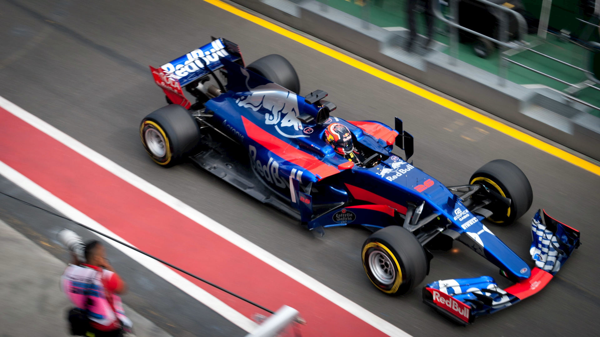
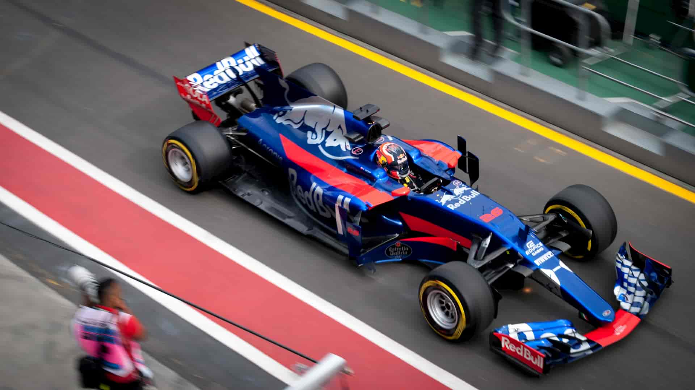
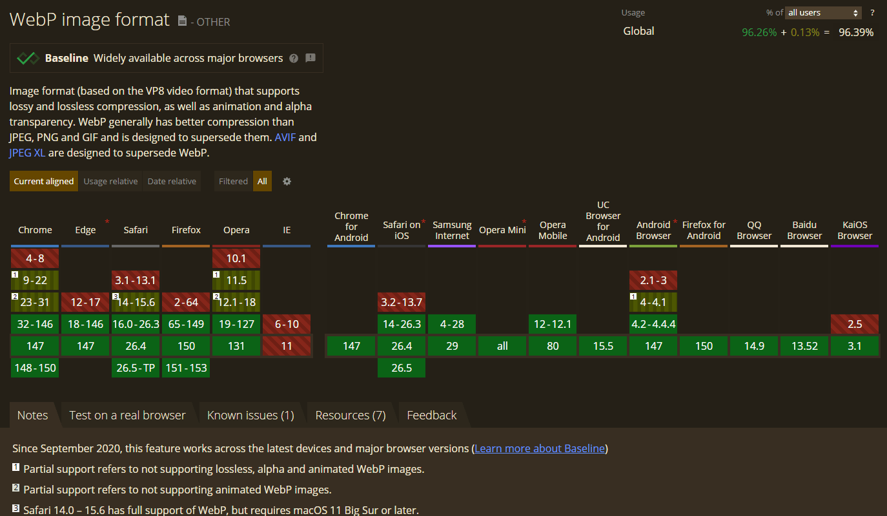

Формат WebP был разработан компанией Google в 2010 году. Он был создан для улучшения скорости загрузки страниц и экономии места на сервере
WebP имеет ряд преимуществ по сравнению с другими форматами изображений. Он позволяет уменьшить размер файлов изображений на 25-35% по сравнению с JPEG, сохраняя при этом качество изображения. WebP обеспечивает поддержку прозрачности, анимации и многоканальности. Это делает формат идеальным для использования на сайтах, где важно быстрое время загрузки, например, в интернет-магазинах или на сайтах с множеством изображений.
Информация по сравнению взята из статьи Джейка Арчибальда
| PNG- оригинал | JPEG | WebP |
|
 Размер: 2,12 Mb |
 Размер: 72,6 Kb |
Размер: 42 Kb |
| PNG - оригинал | JPEG | WebP |
В JPEG просматриваются квадратики и артефакты ареолов при переходе с синего на серый. В WebP переходы близких цветов таряются
| PNG - оригинал | JPEG | WebP |
У WebP качество картинки заметно лучше

Поддерживается на устройствах 96% пользователей